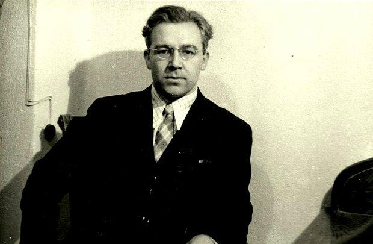
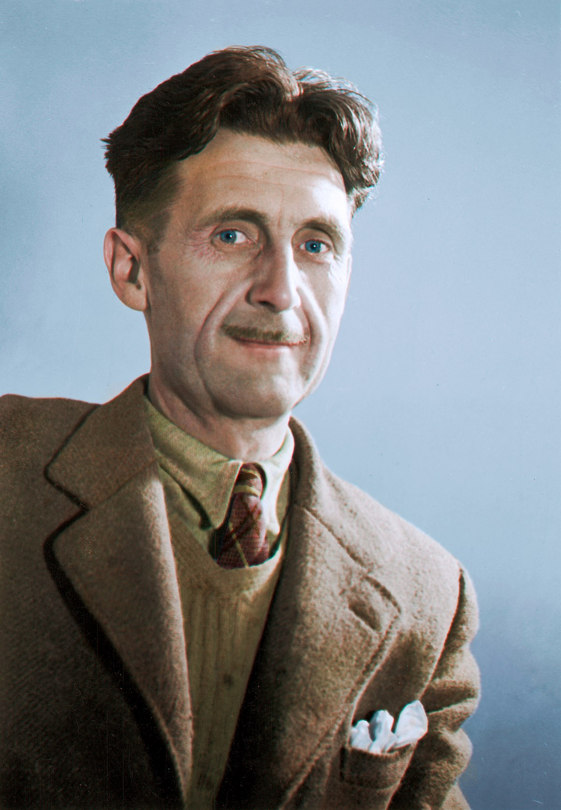
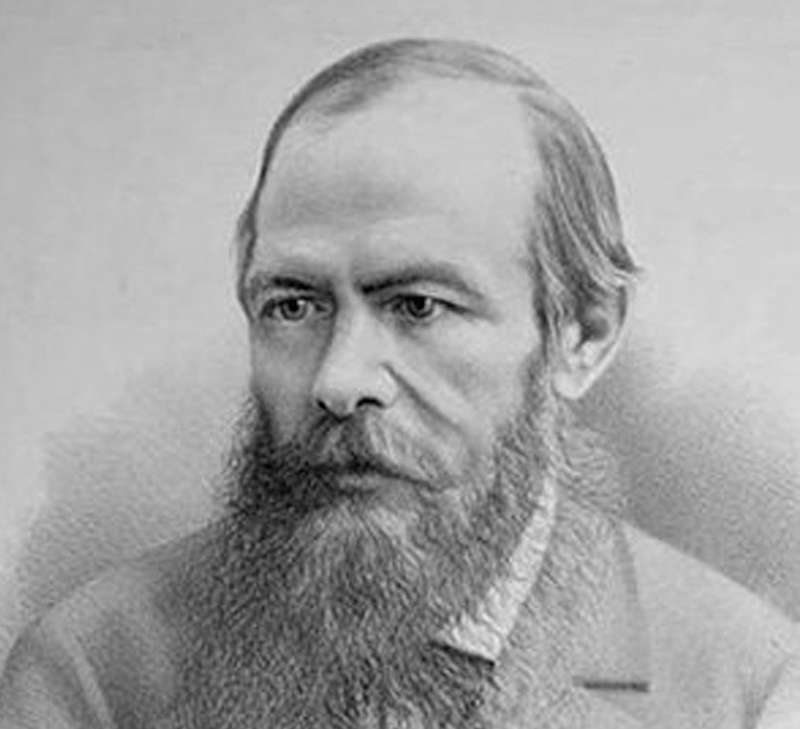
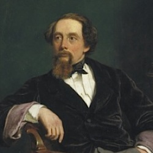
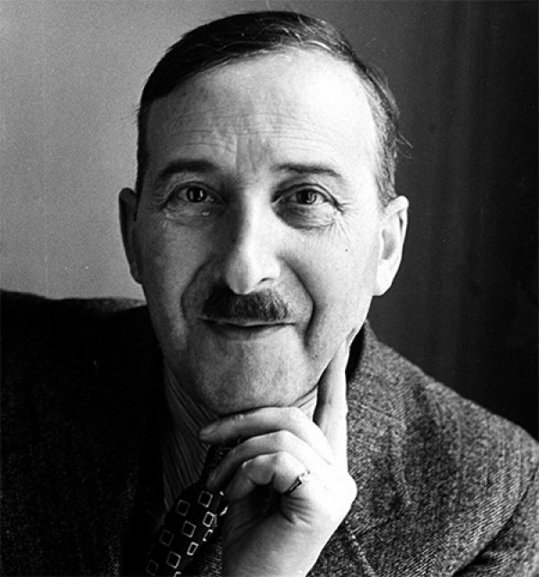

Dan Brown
Dan Brown (d. 22 Haziran 1964), Amerikalı yazar.
Amherst Koleji ve Philips Exeter Akademisi’nden mezun olduktan sonra bir süre eğitim gördüğü bu okullarda İngilizce öğretmenliği yaptı. Şifre çözme ve gizli hükûmet örgütlerine duyduğu ilgi, 1996'da ilk romanı Dijital Kale'nin ortaya çıkmasını sağladı.
Roman, yayımlanmasından hemen sonra Dan Brown bir anda elektronik kitap listelerinde 1 numaraya yükseldi. Amerika Ulusal Güvenlik Teşkilatı'nı (NSA) konu alan roman sivil halkın mahremiyeti ile ulusal güvenlik arasındaki ince çizgiyi irdeliyordu.
Başkanlık Ödülü'nü kazanmış bir matematik profesörü ile ilahiyat müzisyeni bir annenin oğlu olan Dan Brown, bilim ve din gibi paradoksal felsefelerin egemen olduğu bir ortamda büyüdü. Bu birbirini tamamlayıcı görüşlerden aldığı esinle ünlü romanı Melekler ve Şeytanlar'ı 2000 yılında yazdı. Bu yapıt da bir İsviçre fizik laboratuvarı ile Vatikan kenti arasında geçen, bilim ve din odaklı bir gerilim romanıdır.
Yazar 2001'de yazdığı tekno-gerilim türündeki ikinci romanın İhanet Noktası'nda da politikada ahlak, güvenlik ve gizli teknoloji konularını işledi.
Dan Brown, büyükbabasının da mason olduğunu pek çok programda açıklamıştır. Evlerinde garip önlükler ve beyaz eldivenler bulduğunu söylemiştir. Kayıp Sembol adlı romanını da bu yüzden yazdığı düşünülmektedir. Kitabın konusu da masonluktur.
Ayrıca, 2003 yılında çıkardığı ve tüm dünyada satış rekorları kıran Da Vinci Şifresi kitabının da yazarıdır. Da Vinci Şifresi, Melekler ve Şeytanlar ve Cehennem kitaplarının filmi de çekilmiştir.
Sanat tarihçisi ve ressam olan eşi de araştırmalarına yardım etmekte ve eserlerine fon sağlamaktadır.

Sabahattin Ali
Sabahattin Ali (25 Şubat 1907, Eğridere - 2 Nisan 1948, Kırklareli), Türk yazar ve şair. Edebî kişiliğini toplumcu gerçekçi bir düzleme oturtarak yaşamındaki deneyimlerini okuyucusuna yansıttı ve kendisinden sonraki Cumhuriyet dönemi Türk edebiyatını etkileyen bir figür hâline geldi. Daha çok öykü türünde eserler verse de romanlarıyla ön plana çıktı; romanlarında uzun tasvirlerle ele aldığı sevgi ve aşk temasını, zaman zaman siyasi tartışmalarına gönderme yapan anlatılarla zaman zaman da toplumsal aksaklıklara yönelttiği eleştirilerle destekledi. Kuyucaklı Yusuf (1937), İçimizdeki Şeytan (1940) ve Kürk Mantolu Madonna (1943) romanları Türkiye'deki edebiyat çevrelerinin takdirini toplayarak hem 20. yüzyılda hem 21. yüzyılda etkisini sürdürdü.
Eğridere'de doğan Sabahattin Ali, ilk hikâye ve şiir denemelerine Balıkesir'de başladıktan sonra İstanbul'daki edebiyat öğretmeni Ali Canip Yöntem'in desteğiyle ilk kez Akbaba ve Çağlayan dergilerinde şiirlerini yayımladı. Anadolu'da kısa süre öğretmenlik yaptıktan sonra Türk devleti tarafından dil eğitimi için Almanya'ya gönderildi. Türkiye'ye döndüğünde Almanca öğretmeni olarak göreve başlasa da önce komünizm propagandası yaptığı iddiasıyla bir süre tutuklandı, ardından ise Türk devlet yöneticilerini eleştirdiği iddiasıyla tekrar tutuklandı. Bu dönemde memurluktan ihraç edildi ancak Atatürk hakkında yazdığı bir şiirden dolayı yeniden devlet kurumlarında görevlendirildi. Ayrıca kendisine yüklenen sosyalist algısını kırmak için de Esirler adlı bir oyun kaleme aldı.
Hayatının son yıllarında Türk milliyetçileriyle yaşadığı tartışmalarla da öne çıktı, özellikle Türkçü-Turancı yazar Nihal Atsız ile yaşadığı gerilim giderek artarak Irkçılık-Turancılık Davasının bir parçası oldu. Bu dönemde Aziz Nesin'le beraber çıkardığı Markopaşa dergisinde siyasileri eleştirmesi yüzünden çeşitli davalarla uğraşmak zorunda kaldı. Hakkındaki davaların aleyhinde seyrettiği bir dönemde Türkiye'den ayrılmak istedi ve Bulgaristan sınırını geçmek isterken kendisine kaçma girişiminde rehberlik eden Ali Ertekin tarafından milliyetçi gerekçelerle öldürüldü.
Ahmet Ümit
Ahmet Ümit, 1960’ta Gaziantep’te doğdu. 1983’te Marmara Üniversitesi Kamu Yönetimi Bölümü’nü bitirdi.
1985-1986 yıllarında, Moskova’da, Sosyal Bilimler Akademisi’nde siyaset eğitimi gördü. Şiirleri, 1989 yılında Sokağın Zulası adıyla yayımlandı.
1992’de ilk öykü kitabı Çıplak Ayaklıydı Gece yayımlandı. Bunu Bir Ses Böler Geceyi, Agatha’nın Anahtarı, Şeytan Ayrıntıda Gizlidir adlı polisiye öykü kitapları izledi.
Hem çocuklara hem büyüklere yönelik Masal Masal İçinde ve Olmayan Ülke kitapları ile farklı bir tarz denedi. 1996’da yazdığı ilk romanı Sis ve Gece, polisiye edebiyatta bir başyapıt olarak değerlendirildi.
Bu romanın ardından Kar Kokusu, Patasana ve Kukla yayımlandı. Bu kitapları Ninatta’nın Bileziği, İnsan Ruhunun Haritası, Aşk Köpekliktir, Beyoğlu Rapsodisi, Kavim, Bab-ı Esrar, İstanbul Hatırası, Sultanı Öldürmek,Beyoğlu’nun En Güzel Abisi ve Elveda Güzel Vatanım adlı kitapları izledi.
Ahmet Ümit’in, İsmail Gülgeç’le birlikte hazırladığı Başkomser Nevzat-Çiçekçinin Ölümü ve Başkomser Nevzat-Tapınak Fahişeleri, Aptülika (Abdülkadir Elçioğlu) ile birlikte hazırladığı Başkomser Nevzat-Davulcu Davut’u Kim Öldürdü? ve Bartu Bölükbaşı ile birlikte hazırladığı Elveda Güzel Vatanım-İttihatçıların Yükselişi adlı çizgi romanları da bulunmaktadır.
Eserleri yirminin üzerinde yabancı dile çevrilmiştir. Yazarın tüm yapıtları Everest Yayınları tarafından yayımlanmaktadır.

George Orwell
Eric Arthur Blair veya daha bilinen takma adıyla George Orwell, (25 Haziran 1903; Bihar - 21 Ocak 1950; Londra),[1] 20. yüzyıl İngiliz edebiyatının önde gelen kalemleri arasında yer alan İngiliz romancı, gazeteci ve eleştirmen. En çok, dünyaca ünlü Bin Dokuz Yüz Seksen Dört adlı romanı ve bu romanda yarattığı Big Brother (Büyük Birader) kavramı ile tanınır.
Eserlerinde yer alan netlik, zeka, toplumsal adaletsizliğe karşı farkındalık ve totalitarizme karşı duruşu onun imzası niteliğindedir.[2][3]
Orwell'in yaşamı, yazılarını sonradan etkileyecek olan deneyimlerle doludur. Burslu okuduğu Eton Kolejinden mezun olduktan sonra, o sırada bir İngiliz sömürgesi olan Burma'da bulunmuş, kısa süreliğine buranın polis teşkilatında görev yapmıştır. Bu memuriyet döneminde şahit olduğu acımasız uygulamalar, emperyalizme karşı geliştirdiği derin öfkeye katkıda bulunmuştur.
Gençlik döneminde Fransa'da bulunmuş, türlü mesleklerde çalışmış, para problemi gerek yazarlığa başlamadan önce, gerekse ilk yapıtlarını kaleme aldığı yıllarda yakasını bırakmamıştır.

Fyodor Dostoyevski
Fyodor Mihayloviç Dostoyevski (Rusça: Фёдор Миха́йлович Достое́вский, Bu ses hakkındaDinle (yardım·bilgi); d. 11 Kasım 1821, Moskova – ö. 9 Şubat 1881, Sankt-Peterburg), Rus roman yazarıdır.
Çocukluğu sarhoş bir baba ve hasta bir anne arasında geçiren Dostoyevski, annesinin ölümünden sonra Petersburg'daki Mühendis Okulu'na girdi. Babasının ölüm haberini de burada aldı. Okulu başarıyla bitirdikten sonra istihkâm bölüğüne girdi. Bir yıl sonra istifa ederek buradan ayrıldı.[1] Ordudan ayrıldıktan sonra edebiyata yönelen Dostoyevski, ilk kitabı İnsancıklar'ı 1846 yılında yayımladı. Bu eserinin ardından yazdığı kitaplarla beklediği başarıya ulaşamayan Dostoyevski'nin umudu kırıldı ve politikayla ilgilenmeye başladı.
1849 yılında devlet aleyhindeki bir komploya karıştığı iddiası ile tutuklandı. 10 ay hapishanede kalan Dostoyevski, kurşuna dizilmek üzereyken diğer sekiz tutuklu arkadaşı ile affedildi. Cezası dört yıl kürek, dört yıl da adî hapse dönüştürüldü. Cezasını çekmesi için Sibirya'da bulunan Omsk Cezaevi'ne gönderildi. Burada geçirdiği dört yılın ardından er rütbesi ile hizmete verildi. Subaylığa kadar yükseldi. 1857 yılında Mariya Dmitriyevna İsayeva ile evlendi. Beş yıl boyunca görev yapan Dostoyevski, 1859 yılında özgür bırakıldı ve Petersburg'a yerleşti.[1]
Petersburg'a döndükten sonra Ezilenler (1861) ve Ölüler Evinden Anılar (1862) adlı eserlerini yazdı. Kardeşiyle birlikte iki dergi çıkardı. 1862'de, arzuladığı Avrupa seyahatini gerçekleştirdi. Sara nöbetleri ve kumar bağımlılığı yüzünden maddi açıdan darlığa düştü. Bu dönemde Yeraltından Notlar (1864), Suç ve Ceza (1866), Kumarbaz (1866), Budala (1868), Ebedi Koca (1870) ve Ecinniler (1872) gibi eserleri yazdı. Eşinin ölümünden sonra sekreteriyle evlendi. Yeniden borçlandı ve kumarhanelerde gezmeye başladı. Kızının ölümünün ardından büyük bir sarsıntı geçirdi.
Delikanlı (1875), Bir Yazarın Günlüğü (1876) ve Karamazov Kardeşler (1879) adlı eserlerinde yazarlık hayatı boyunca konu edindiği temaları yeniden ele aldı. Karamazov Kardeşler adlı yapıtını üç yılda bitiren Dostoyevski, bir ciğer kanamasıyla yatağa düştü ve 28 Ocak 1881 tarihinde öldü. Dostoyevski için 31 Ocak 1881 tarihinde yapılan cenaze töreninde yaklaşık otuz bin kişi tabutunun arkasından yürüdü.[2] Dünya edebiyatını en çok etkileyen ve en çok okunan yazarlardan biri olan Dostoyevski'nin eserleri birçok 20. yüzyıl düşünürünün fikirlerini derinden etkiledi.

Charles Dickens
Charles John Huffam Dickens İngiliz yazar ve toplum eleştirmeni. En unutulmaz kurgusal karakterlerden bazılarını yaratmasının yanında Victoria devrinin en iyi romancısı olarak kabul edilir. Yaşadığı sürede eserleri benzeri görülmemiş bir üne sahip oldu ve yirminci yüzyılda edebi dehası eleştirmenler ve ilgili kişiler tarafından kabul gördü. Romanları ve kısa öyküleri dünya çapında tanınmaya devam ediyor.
İngiltere'nin Portsmouth şehrinde doğan Dickens babasının borçları yüzünden hapishaneye düşmesi sonrasında fabrikada çalışabilmek için okuldan ayrıldı. Düzgün bir eğitim almamış olsa da erkenden yoksullaşması ona başarıya giden yolda yardım etti. Kariyeri boyunca 20 yıllık bir süre içerisinde haftalık olarak çıkan bir gazeteyi yönetti, 15 roman, 5 uzun öykü, yüzlerce kısa öykü ve kurgu dışı makale yayımlayıp yorulmak nedir bilmeden çalıştı ve çocuk hakları, eğitim ve diğer toplumsal konularda yenilikler için mücadele verdi.
1836'da yayımlanan The Pickwick Papers romanı ile şöhrete kavuştu. Birkaç yıl içerisinde uluslararası tanınan bir edebiyatçı oldu, kişilik ve toplum üzerine mizahi, satirik ve keskin gözlemleri ile ünlü oldu. Romanlarının çoğunlukla haftalık ya da aylık yayımlar şeklinde çıkması Viktorya döneminde en yaygın basım şekli olan dizi yayımlara öncülük etti. Dizi olarak çıkan eserler Dickens'a okuyucuların tepkisini iyi değerlendirme fırsatı verdi ve o da sık sık konuları ve karakterlerin gelişimini aldığı yorumlara göre şekillendirdi. Örneğin eşinin pedikürcüsünün David Copperfield'taki Bayan Mowcher'ın kusurlarının fazla ön planda olduğu konusundaki ifadelerinden sonra karakterin iyi özelliklerini geliştirdi. Görünüşe göre Oliver Twist'teki Fagin için ünlü suçlu Ikey Solomon'dan esinlenmişti. Leigh Hunt'tan ilham alarak yarattığı Bleak House''taki Bay Skimpole karakterinin kitabın bölümlerini takip eden arkadaşlarının tavsiyesiyle geliştirdi. Aynı romandaki Lawrence Boythorne ve kilise görevlisi Mooney için de gerçek hayattan kişilerden örnek almıştı. Boythorne için Walter Savage Landor'dan ve Mooney için de Salisbury Square'deki Looney isimli kilise görevlisinden esinlenmişti. Konularını özenle oluştururdu ve hikayelerine sıklıkla güncel olaylardan unsurları serpiştirirdi.
Dickens kendi çağının en önemli edebiyatçılardan biri olarak görülür. 1843 tarihli romanı A Christmas Carol yazılan en etkili eserlerden biridir. Her zaman popüler kalmıştır ve hâlâ her sanat tarzında uyarlanmaya devam ediyor. Gerçekçiliği, mizahı, yazım şekli, benzersiz karakterleri ve toplum eleştirileri sayesinde yaratıcı dehası Leo Tolstoy'tan G. K. Chesterton ve George Orwell'a kadar pek çok yazar tarafından övülmüştür. Fakat Oscar Wilde, Henry James ve Virginia Woolf ise psikolojik derinlik eksikliği, gevşek yazım tarzı, duygusal mizacından şikayet etmişlerdir.
Şengül Boybaş
1980 yılında dünyaya gelen Boybaş, aslen Tokat doğumludur. Günümüzde araştırmacı, danışman, yaşam koçu, yazar ve astrolog kimlikleri ile çalışmalarını sürdürmektedir.
Halkla İlişkiler ve İşletme lisans programlarını tamamlayan Şengül Boybaş, Livkon International’dan Life Coach & NLP sertifikası almıştır. Bir dönem eğlence sektörü bünyesinde organizasyon hizmetleri sunmuştur. 2000 senesinde kariyerini sonlandırmış, bireysel danışmanlık ve koçluk hizmetleri sunmaya başlamıştır.
Türkiye’nin yanı sıra dünyanın önde gelen isimleri ile gerçekleştirdiği, kendi geliştirdiği iletişim ve koçluk tekniklerini kullandığı kişiler için ilişki ve iş hayatlarında başarıyı yakalamalarına yardımcı olmaktadır. Seanslarla danışanlarının kendilerini tanıyıp hayatlarını şekillendiren içsel durumları ve olayları anlamlandırmalarına ve gelecek vizyonlarını netleştirmelerini sağlamaktadır.

Stefan Zweig
Stefan Zweig (28 Kasım 1881 - 22 Şubat 1942), Avusturyalı roman, oyun, biyografi yazarı ve gazetecidir. 1920'ler ile 1930'lar arasında edebiyat kariyerinin zirvesinde olmuş Zweig, dönemin dünyasının en çok tercüme edilen ve en popüler yazarlarından biriydi.[1]
1920'li ve 1930'lu yıllarda Alman dilinin en çok okunan yazarları arasında sayılan Zweig'in eserleri, dünya çapında dönemin en çok okunan kitapları arasına girdi, elliyi aşkın dile tercüme edildi. 1933'te diğer Yahudi yazarlara da yapıldığı gibi eserleri, Naziler tarafından yakıldı. Bu olaydan sonra ülkesini terk eden Zweig, 1941'de Brezilya'ya yerleştikten sonra 22 Şubat 1942'de karısı Lotte Altmann ile birlikte intihar etti.